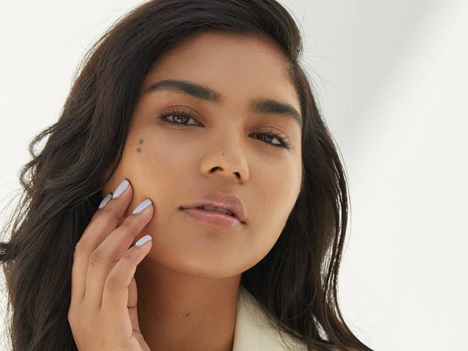

3 Tricks for Identifying Your Skin’s Undertone
Whether you’re makeup-obsessed or a beauty lover in training, shade matching can be a struggle. One of the keys to finding the right products for you — from foundation and concealer to lipstick and blush — is to consider your complexion’s undertone. Not sure what yours is? We have three quick and easy tricks to share that will help you figure out if yours are warm, cool or neutral. Read on to find out what they are, plus what color-correcting products will work best for your newly identified undertone. Undertone Tip #1: The Jewelry Test Your jewelry collection can give you insight into what your skin’s undertone is. If you typically gravitate toward gold jewelry, you likely have a warm undertone. If you typically wear silver accessories, we’d guess your undertone is cool. Undertone Tip #2: The Vein Test Turn your arm over and look at your veins. A green cast indicates warm tones, while a blue cast sends a cool signal. If you see both, you’re neutral. Undertone Tip #3: The White Balance Test Put on a white shirt or hold a white piece of paper next to your face without makeup on. If your skin picks up a yellow-ish tint, it could indicate a warm tone. If you see blue or pink tones, you likely have a cool undertone. How Your Skin’s Undertone Can Help You Shade Match Once you’ve determined whether your skin is cool, warm or neutral, you can use your undertone as a guide when comparing different shades of makeup products to find your perfect match. Looking for a new foundation? The Maybelline New York Fit Me! Matte + Poreless Foundation is offered in 40 shades categorized by skin tone and undertone to make your choice easy. Another one of our favorites is the Valentino Beauty Very Valentino 24 Hour Wear Liquid Foundation. As the product name suggests, the formula lasts for up to 24 hours and offers a buildable, semi-matte finish. There are also customizable products, like the NYX Professional Makeup Total Control Pro Drop Foundation Hue Shifters, that allow you to better match your favorite complexion products to your own undertone by using droplets of pigment. Color-correcting products can also come in handy for achieving a flawless finish once you have your product line-up set. As a rule of thumb, choose a color corrector that is the opposite of your undertone on the color wheel and apply it as a makeup base or on a specific area that you’re trying to color correct. If you have a pink undertone (or redness on your skin), we recommend reaching for the NYX Professional Makeup Studio Perfect Primer in Green.